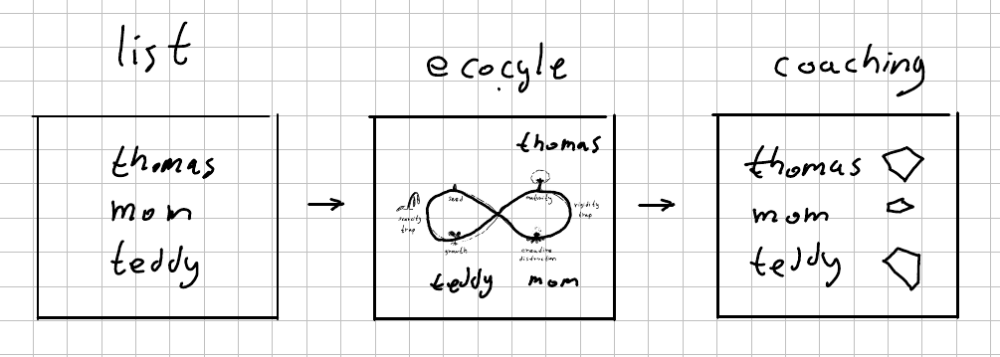

Increase your Nunchi (눈치) - Workshop

Nunchi (눈치) is the art of understanding what people are thinking and feeling, a quality held by those who are sensitive to the dynamics within a given group.
This is a 30 minutes self-guided workshop. It is powered by Liberating Structures (LS) and Play Therapy. A link to the workshop will be avaliable soon. Email orengolan@gmail.com to get notified.
Learning Outcomes:
After completing the workshop you will be able to: * Describe the concept of Nunchi (눈치). * Recognize the importance of Nunchi. * Increase your Nunchi with people you care for.
Optional outcomes: * Describe what are Liberating Structures (LS). * Explain the value of LS for relationships and business. * Identify situations where LS can be used.
Agenda:
- List of things (5 minutes)
- Ecocycle (5 minutes)
- Coaching style (10 minutes)
- Crash course in Liberating Structures (optional. 5 minutes)
- W3 - What, So What, Now What (5 minutes)
Concepts and terminology:
- 눈치 (nunchi) - “Art of understanding”
- 정 (jeong) - Attachment
- 인화 (inhwa) - Harmony
- 기분 (gibun) - Feeling; Dignity
- 체면 (chaemyeon) - Face